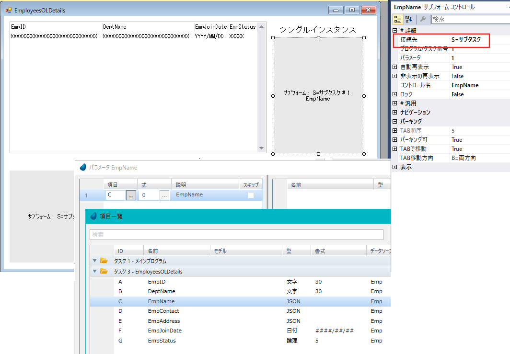

以下のようなプログラムを作成することで、JSONの構造体の読込、変更、更新を行うことができます。
［データベース］テーブルに「Default JSON Database」という JSONタイプの項目がデフォルトで定義されています。JSONデータベースのタイプを使用することでJSONデータソースを作成することができます。
"Default JSON Database" の ［データベース］特性には 「Temporary JSON Database」 というメモリデータベースが定義されています。
［データソース］リポジトリに、以下のように "Emp"、"EmpName"、"EmpContact"、"EmpAddress" のデータソースを定義します。［データベース］には、「Default JSON Database」を設定します。
Emp データソース
"Emp"データソースには、"EmpName"、"EmpContact"、"EmpAddress" のカラムを定義し、データ型に「S=JSON」を設定します。

EmpName データソース

EmpContact データソース

EmpAddress データソース

|
JSONデータソースのの［データソース］特性は無効になっています。定義取得（オプション > 定義取得） も無効です。 |
"Emp" データソースの "EmpName"カラム の［JSON 定義］特性にEmpNameデータソースを指定します。［インスタンス］特性には、「S=シングル」を設定します。、

"Emp データソースの "EmpCotact"カラム の［JSON 定義］特性にEmpContactデータソースを指定します。［インスタンス］特性には、「M=マルチ」を設定します。

Emp データソースの "EmpAddress"カラム の［JSON 定義］特性にEmpAddressデータソースを指定します。［インスタンス］特性には、「マルチ」を設定します。
、
|
［JSON定義］特性でズームすると、［データ］リポジトリ内に定義されたJSONデータソースソースが一覧表示されます。 |
対応する「シングル」と「マルチ」のインスタンステーブルを表示するプログラム "EmployeesOLDetails" を作成します。
メインソースには、"Emp" データソースを定義し、全てのカラムを［データビュー］ユニットに定義します。
"EmpName"、"EmpContact"、"EmpAddress" の各データソースをメインソースにしたサブタスクを作成します。

サブタスクにデータを提供するために、各サブタスクのメインソースの［JSONソース項目］特性を定義します。

この特性には、"EmpName"サブタスクの場合、親タスクのデータビュー項目C（"EmpNam"）を、サブタスク"EmpName"を呼び出す際のパラメータとして指定します。
メインフォームに、「シングル」および「マルチ」のインスタンス出力用のサブフォームを作成します。

プログラム "EmployeesOLDetails"を実行すると、作業ディレクトリ上の "emp.json" が読み込まれ、以下のようなフォームが表示されます。プログラムの実行後に 同じファイル名で更新されます。

プログラムを終了すると、"emp.json" ファイルが更新されます。以下のような内容で出力されます。
{"Emp":[{"DeptName":"HR","EmpAddress":[{"City":"","Country":"","HomeNo":1,"State":"","StreetName":"1"},
{"City":"","Country":"","HomeNo":2,"State":"","StreetName":"2"},
{"City":"","Country":"","HomeNo":3,"State":"","StreetName":"3"}],
"EmpContact":[{"MobNo":1,"PhoneNo":1},{"MobNo":2,"PhoneNo":2},{"MobNo":3,"PhoneNo":3}],"EmpID":"1","EmpJoinDate":"12/12/2000","EmpName":{"firstName":"aa","lastName":"aaa"},
"EmpStatus":false},{"DeptName":"QA","EmpID":"2","EmpJoinDate":"01/01/2021","EmpStatus":true},
{"DeptName":"Dev","EmpAddress":[{"City":"Pune","Country":"India","HomeNo":40,"State":"Maha","StreetName":"Baker's st"},
{"City":"Mumbai","Country":"India","HomeNo":50,"State":"Maha","StreetName":"MG Road"}],
"EmpContact":[{"MobNo":2147483647,"PhoneNo":20450000},{"MobNo":2147483647,"PhoneNo":20288888}],"EmpID":"3","EmpJoinDate":"10/10/2005",
"EmpName":{"firstName":"Jenny","lastName":"Murphy"},"EmpStatus":false},
{"DeptName":"sgahs","EmpID":"4","EmpJoinDate":"01/01/1901","EmpStatus":false}]}
サポートバージョン： |
4.8.1 |